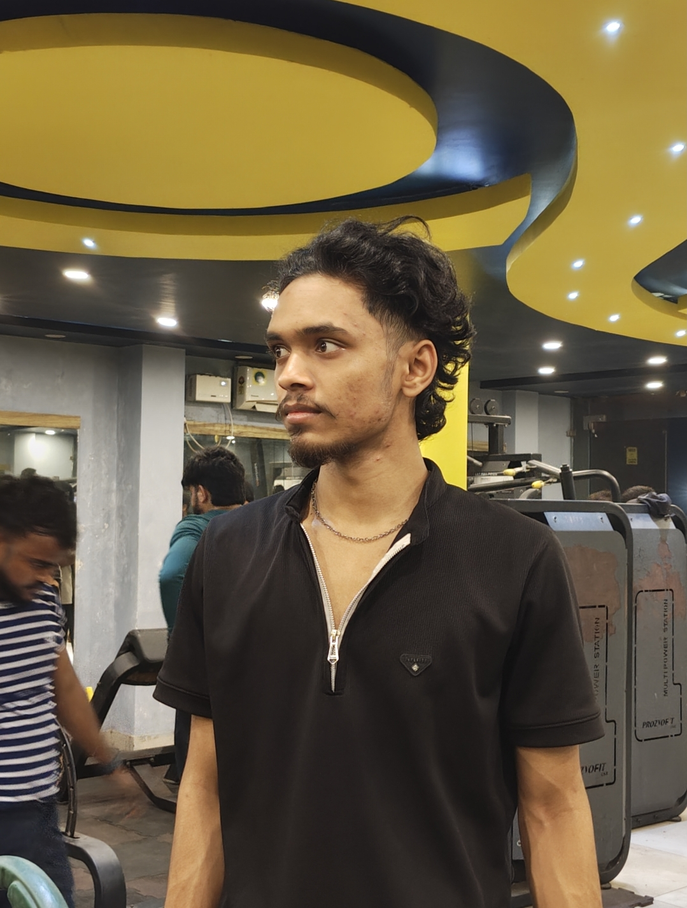

Chamakta hua orbital view — zoom karo, planets pe click karo
Scroll / pinch se zoom karo · drag se poora system ghumao · kisi bhi planet pe click karke uska close-up dekho
✋ Kisi bhi planet ko dabaakar (press & hold) idhar se udhar khaisch sakte ho
Kaise chalta hai: Har planet apni orbit line pe real relative speed se ghoomta hai — jitna Sun se door utna slow. Mouse wheel ya pinch se pura system zoom kar sakte ho, khaali jagah drag karke ghuma sakte ho, aur kisi bhi planet pe click karke uska close-up card khul jayega jisme uske facts honge. Planet ko dabaakar khaisch bhi sakte ho — wo apni orbit chhod kar jahan chhodoge wahin ruk jayega, "Reset Positions" dabaakar wapas orbit pe la sakte ho. Upar search bar se kisi bhi planet ka naam type karke seedha uske paas pahunch sakte ho.

" onerror="this.closest('.about-photo-frame').style.display='none'; document.getElementById('avatarFallback').style.display='flex';">CS Student
Code likhta hoon, universe explore karta hoon — is solar system ko bhi maine hi banaya hai. 🚀